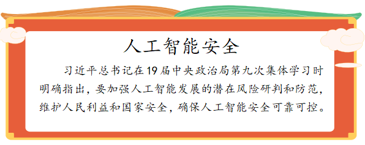

任务一 认识人工智能安全的新型攻击和风险
【任务描述】
人工智能技术的蓬勃兴起与迅猛发展，应用正在改变人类社会的发展轨迹的社会生产生活方式。与此同时，人工智能给全社会带来的不容忽视的风险挑战，也随之成为一个国际国内、社会各界都广泛关注的重大现实问题、重大时代议题。人工智能在欺诈、违法不良信息传播、密码破解等攻击手段的应用给传统安全检测带来了新的挑战。2017年我国浙江湖北等地发生多起犯罪分子利用语音合成技术假扮受害人亲属实施诈骗的案件，造成严重后果和恶劣社会影响。2018年，西北大学团队基于人工智能技术建立了一套验证码求解器，仅利用500个目标验证码优化求解器，便可使求解器在0.05秒之内攻破验证码。要利用好人工智能技术，就要全面清晰的了解新的攻击威胁，人工智能安全隐患及对相关方造成的影响。
【任务实施】
1.1了解什么是人工智能安全
人工智能安全是指通过采取必要措施，防范对人工智能系统的攻击侵入干扰破坏和非法使用以及意外事故，使人工智能系统处于稳定可靠运行的状态，以及遵循人工智能以人为本权责一致等安全原则，保障人工智能算法模型，数据系统和产品应用的完整性保密性可用性鲁棒性透明性公平性和隐私的能力。
1.2人工智能系统面临的新型攻击
人工智能系统除了会遭受拒绝服务等传统网络攻击威胁外，也会面临一些特定攻击。常见的新型攻击方法包括：
一是对抗样本攻击。是指在输入样本中添加细微的通常无法识别的干扰，导致模型以高置信度给出一个错误的输出。深度学习系统容易受到精心设计的对抗样本的影响，可能导致系统出现误判或漏判等错误结果。对抗样本攻击也可来自物理世界，例如通过精心构造的交通标志对自动驾驶进行攻击，一个经过商家修改的实体停车标志，能够使得一个实时的目标检测系统，将其误识别为限速标志，从而可能造成交通事故。攻击者利用精心构造的对抗样本，也可发起模仿攻击、逃避攻击等欺骗攻击。如在图片上加入一些对抗干扰。所谓对抗干扰，就是针对智能判别式模型的缺陷，设计算法精心构造与正常样本差异极小、能使模型错误识别的样本。如图1所示，本来是一幅手枪的图片，如果加入一些对抗干扰，识别结果就会产生错误，模型会识别为不是枪。在人的前面挂一块具有特定图案的牌子，就能使人在视频监控系统中“隐身”（见图2）。在自动驾驶场景下，如果对限速标识牌加一些扰动，就可以误导自动驾驶系统识别成“Stop”（见图3），显然这在交通上会引起很大的安全隐患。
二是数据投毒。主要是在训练数据中加入精心构造的异常数据，破坏原有的训练数据的完整性，导致算法模型决策出现偏差。数据投毒主要有两种攻击方式：一种是采用模型偏斜方式，主要攻击目标是训练数据样本，通过污染训练数据达到改变分类器分类边界的目的；另一种则是采用反馈误导方式，主要攻击目标是人工智能的学习模型本身，利用模型的用户反馈机制发起攻击，直接向模型“注入”伪装的数据或信息，误导人工智能做出错误判断。“数据投毒”危害巨大。在自动驾驶领域，“数据投毒”可导致车辆违反交通规则甚至造成交通事故；在军事领域，通过信息伪装的方式可诱导自主性武器启动或攻击，从而带来毁灭性风险。
三是模型窃取。是指向目标模型发送大量预测查询，使用接收到的响应来训练另一个功能相同或类似的模型，或采用逆向攻击技术，获取模型的参数及训练数据。
四是数据泄露。数据采集与用户授权不一致，个人敏感信息采集合规问题，数据质量问题，用户选择退出权难以保障。人工智能应用可导致个人数据过度采集，加剧隐私泄露风险。随着各类智能设备（如智能手环、智能音箱）和智能系统（如生物特征识别系统、智能医疗系统）的应用普及，人工智能设备和系统对个人信息采集更加直接与全面。相较于互联网对用户上网习惯、消费记录等信息采集，人工智能应用可采集用户人脸、指纹、声纹、虹膜、心跳、基因等具有强个人属性的生物特征信息。这些信息具有唯一性和不变性，一旦被泄露或者滥用会对公民权益将造成严重影响。此外还有匿名化数据被重识别问题，数据标注安全隐患和合规问题，数据存储安全隐患，数据共享安全隐患，数据传输安全隐患等。
五是人工智能系统攻击。对机器学习系统的典型攻击是影响数据机密性及数据和计算完整性的攻击，还有其他攻击型形式导致拒绝服务信息泄露或无效计算。例如，在智能音箱系统的应用中，对于开放的物理端口或接口，攻击者可利用接口、存储芯片的不安全性，直接拆解音箱硬件芯片，在芯片中植入后门，用于监听获取智能音箱的控制权，篡改操作系统或窃取个人数据。

1.3人工智能对人类的安全影响
随着人工智能在国防、医疗、交通、金融等重要行业领域的深入应用，如果人工智能被不当利用，可能会对国家安全、社会伦理、网络安全、人身安全与个人隐私等造成影响。
一是国家安全影响。人工智能可用于构建新型军事打击力量，对国防安全造成威胁。如生产具有自动识别目标和精准打击能力的人工智能武器、通过生成对抗性网络来制造军事相关的伪装和诱饵、人工智能系统间通过电磁对抗和机器学习帮助改进无线电频谱分配等。利用人工智能对目标用户进行信息定制传播，可达到社会舆论动员目的。通过搜集用户行为数据，采用机器学习对用户进行政治倾向等画像分析，为不同倾向的用户推送其期望的内容。也可通过学习和模拟真实人的言论来影响人们对事物事情的判断，一旦被恶意利用，可能造成大范围内影响。人工智能在情报分析上的大量应用，增加了国家重要数据的泄露风险。人工智能技术在情报收集和分析方面有很多用途，情报工作者可以从监控社交媒体等渠道获取越来越多的数据，通过人工智能数据对海量数据进行挖掘分析，可以获得许多重要敏感数据。
二是社会安全风险。“机器换人”对中低技术要求的劳动力就业造成影响，长远会加剧社会分化和不平等现象。工业机器人和各种智能技术的大规模使用，，使从事劳动密集型、重复性、高度流程化的行业的工人面临失业威胁，尤其对于受教育程度较低的人群，人工智能的普及会让他们的竞争力大幅降低，“机器吃人”的悲剧将在各行各业上演，这样导致的直接结果是大量的劳动者会处于失业状态，当一个国家的失业人数过多，其社会稳定性就难以得到保障。对人工智能技术的依赖会对现有社会伦理造成冲击，影响现有人际关系甚至人类的交往方式。例如，智能伴侣机器人依托个人数据分析，能够更加了解个体心理，贴近用户需求，对人类极度体贴和恭顺，这可能降低人们在现实生活中的正常社交需求，同样会导致社会问题。

三是人身安全风险。人工智能在攸关人身安全的应用领域，可能由于漏洞缺陷或恶意攻击等原因损害人身安全。例如，在家居、医疗、交通等攸关人身安全的领域，一旦这些智能产品（例如智能医疗设备和无人汽车等）遭受网络攻击或存在漏洞缺陷，可能危害人身安全。人工智能技术可能被用于开发武器，借助人脸识别、自动控制等技术开发的人工智能武器，如“杀人蜂”，可以实现全自动攻击目标。如果赋予人工智能武器自行选择并杀害人类的能力，将给我们的人身安全与自由构成极大威胁。
【任务拓展】
人工智能将会威胁人类生存还是让人类生活变得更美好，结合学习材料和探究活动，谈谈你的看法。
